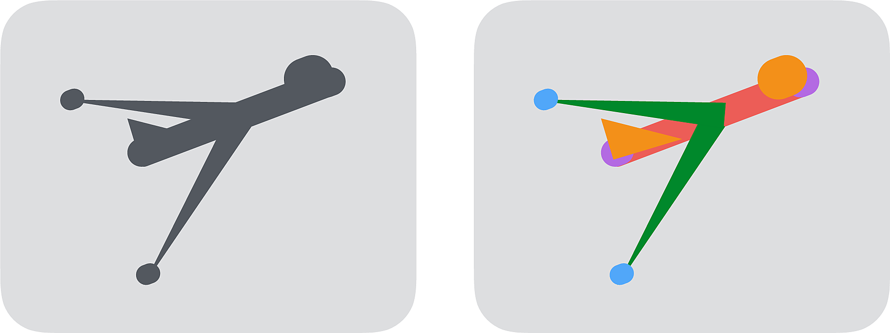
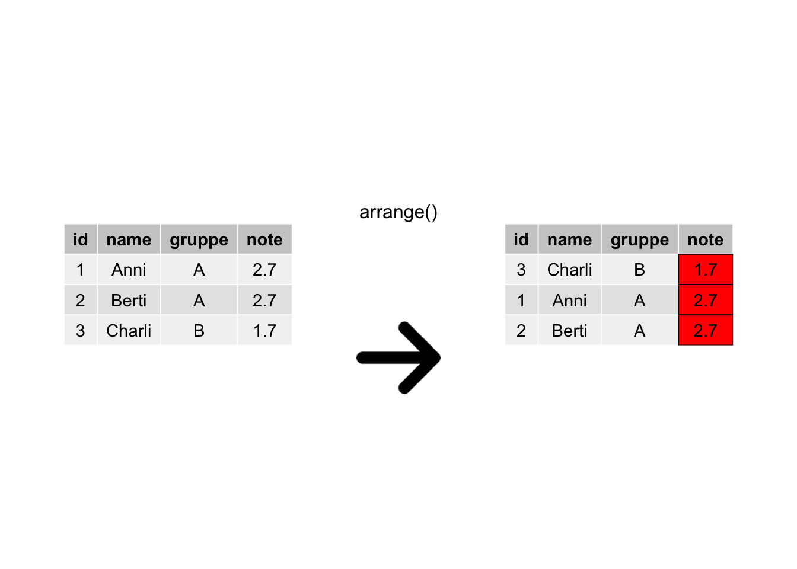
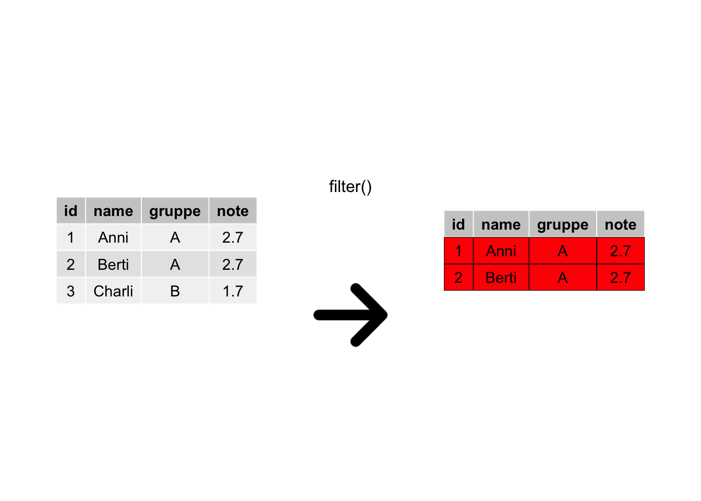
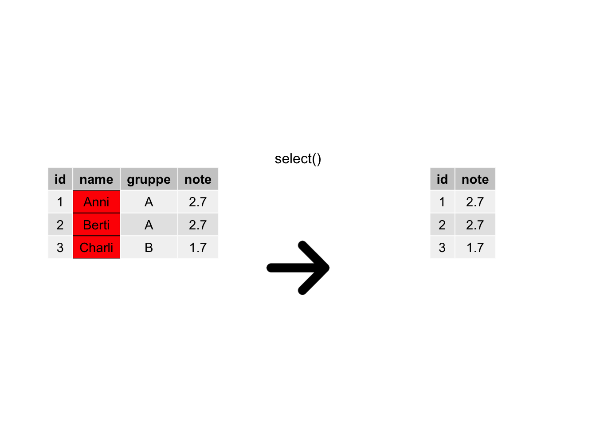
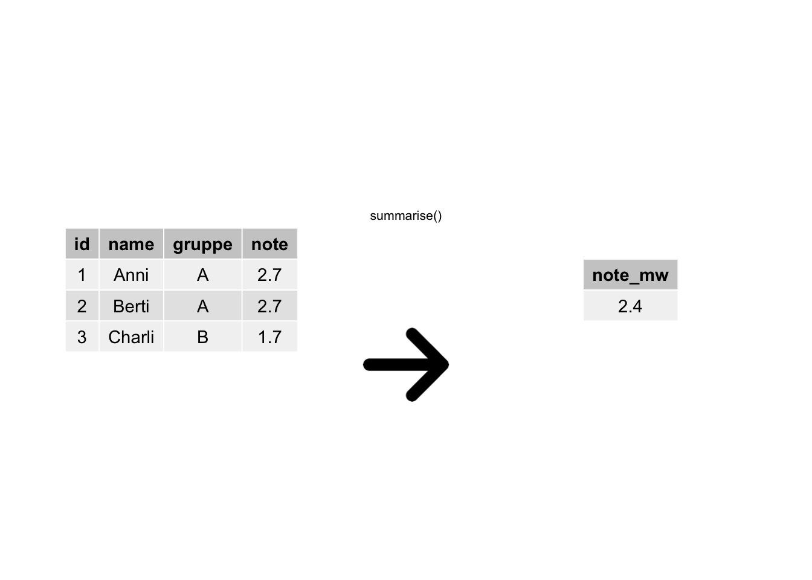
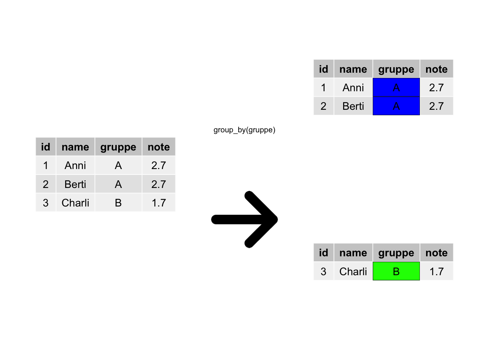
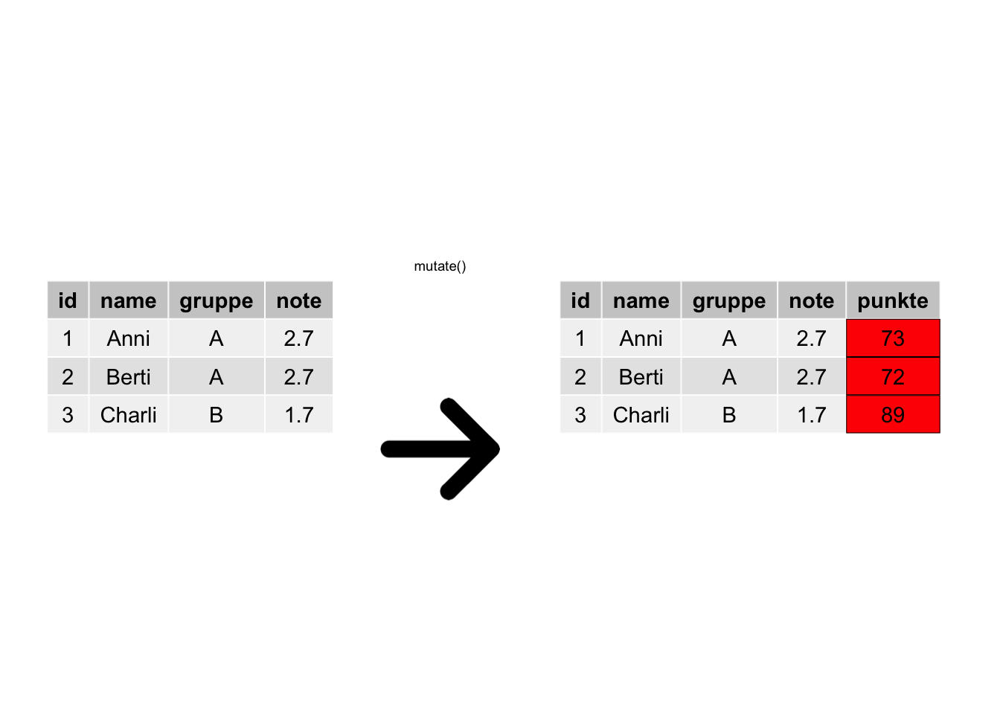
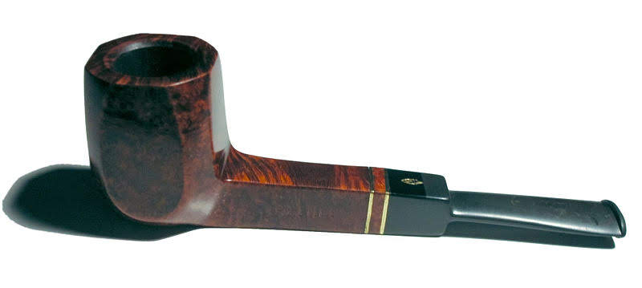

4 Daten umformen
4.1 Lernsteuerung
4.1.1 Standort im Lernpfad
Abb. Abbildung 1.2 zeigt den Standort dieses Kapitels im Lernpfad und gibt damit einen Überblick über das Thema dieses Kapitels im Kontext aller Kapitel.
4.1.2 Lernziele
- Sie können folgende Verben des Datenjudo anwenden:
arrange,filter,select,summarise,group_by,mutate - Sie können Daten in R importieren
- Sie können R-Befehle mit der “Pfeife” verketten
4.1.3 Benötigte R-Pakete
4.1.4 Frag den Bot
👨🏫 Erkläre einem Fünfjährigen, warum Statistik nützlich ist.
🤖 Okay, hör zu. Stell dir vor, du hast viele Spielzeugautos und du willst herausfinden, welches Auto am meisten bespielt wird. Du kannst jeden Tag zählen, wie oft du jedes Auto benutzt hast. Aber das wäre sehr mühsam und könnte schnell durcheinander gebracht werden. Stattdessen kannst du mit Statistik eine einfachere Methode finden. Du kannst zum Beispiel eine Liste machen und jedes Auto mit einer bestimmten Farbe markieren. Dann kannst du jeden Tag einfach zählen, wie oft du jede Farbe verwendet hast. Am Ende kannst du herausfinden, welches Auto am meisten bespielt wurde, indem du siehst, welche Farbe am meisten verwendet wurde. Das ist ein Beispiel dafür, wie Statistik uns dabei helfen kann, Muster in großen Datensätzen zu finden und Entscheidungen zu treffen, ohne alles einzeln zu zählen.
Quelle: ChatGTP, 2023-02-09
4.2 Datenjudo
4.2.1 Die Wahrheit über Data Science
Denkt man an Data Science, stellt man sich coole Leute vor (in San Francisco oder Berlin), die an abgefahrenen Berechnungen mit hoch komplexen statistischen Modellen für gigantische Datenmengen basteln. Tatsächlich besteht ein großer Teil der Arbeit aus dem Aufbereiten von Daten.
4.2.2 Praxisbezug: Aus dem Alltag des Data Scientisten
Laut dem Harvard Business Review allerdings, verbringen diese Leute “80%” ihrer Zeit mit dem Aufbereiten von Daten (Bowne-Anderson 2018). Ja: mit uncoolen Tätigkeiten wie Tippfehler aus Datensätzen entfernen oder die Daten überhaupt nutzbar und verständlich zu machen.
Das zeigt zumindest, dass das Aufbereiten von Daten a) wichtig ist und b) dass man allein damit schon weit kommt. Eine gute Nachricht ist (vielleicht), dass das Aufbereiten von Daten keine aufwändige Mathematik verlangt, stattdessen muss man ein paar Handgriffe und Kniffe kennen. Daher passt der Begriff Datenjudo vielleicht ganz gut. Kümmern wir uns also um das Aufbereiten bzw. Umformen von Daten, um das Datenjudo.\(\square\)
Beispiel 4.1 Beispiele für typische Tätigkeiten des Datenjudos sind:
- Zeilen filtern (z. B. nur Studentis des Studiengangs X)
- Zeilen sortieren (z. B. Studenten mit guten Noten in den oberen Zeilen)
- Spalten wählen (z. B. 100 weitere Produkte ausblenden)
- Spalten in eine Zahl zusammenfassen (z. B. Notenschnitt der 1. Klausur)
- Tabelle gruppieren (z. B. Analyse getrennt nach Standorten)
- Werte aus einer Spalte verändern oder neue Spalte bilden (z. B. Punkte in Prozent-Richtige umrechnen).
- … \(\square\)
4.2.3 Mach’s einfach
Es gibt einen (einfachen) Trick, wie man umfangreiche Datenaufbereitung elegant geregelt kriegt, klingt fast zu schön, um wahr zu sein (s. Abbildung 4.1).
Der Trick besteht darin, komplexe Operationen in mehrere einfache Teilschritte zu zergliedern1. Man könnte vom “Lego-Prinzip” sprechen, s. Abbildung 4.2. Im linken Teil von Abbildung 4.2 sieht man ein (recht) komplexes Gebilde. Zerlegt man es aber in seine Einzelteile, so sind es deutlich einfachere geometrische Objekte wie Dreiecke oder Quadrate (rechter Teil des Diagramms).

Damit Sie es selber einfach machen können, müssen Sie selber Hand anlegen. Importieren Sie daher den Datensatz mariokart, z.B. so:
library(easystats) # Das Paket muss installiert sein
mariokart <- data_read("https://vincentarelbundock.github.io/Rdatasets/csv/openintro/mariokart.csv")
glimpse(mariokart)
## Rows: 143
## Columns: 13
## $ V1 <int> 1, 2, 3, 4, 5, 6, 7, 8, 9, 10, 11, 12, 13, 14, 15, 16, 17,…
## $ id <int64> 150377422259, 260483376854, 320432342985, 280405224677, …
## $ duration <int> 3, 7, 3, 3, 1, 3, 1, 1, 3, 7, 1, 1, 1, 1, 7, 7, 3, 3, 1, 7…
## $ n_bids <int> 20, 13, 16, 18, 20, 19, 13, 15, 29, 8, 15, 15, 13, 16, 6, …
## $ cond <chr> "new", "used", "new", "new", "new", "new", "used", "new", …
## $ start_pr <dbl> 0.99, 0.99, 0.99, 0.99, 0.01, 0.99, 0.01, 1.00, 0.99, 19.9…
## $ ship_pr <dbl> 4.00, 3.99, 3.50, 0.00, 0.00, 4.00, 0.00, 2.99, 4.00, 4.00…
## $ total_pr <dbl> 51.55, 37.04, 45.50, 44.00, 71.00, 45.00, 37.02, 53.99, 47…
## $ ship_sp <chr> "standard", "firstClass", "firstClass", "standard", "media…
## $ seller_rate <int> 1580, 365, 998, 7, 820, 270144, 7284, 4858, 27, 201, 4858,…
## $ stock_photo <chr> "yes", "yes", "no", "yes", "yes", "yes", "yes", "yes", "ye…
## $ wheels <int> 1, 1, 1, 1, 2, 0, 0, 2, 1, 1, 2, 2, 2, 2, 1, 0, 1, 1, 2, 2…
## $ title <chr> "~~ Wii MARIO KART & WHEEL ~ NINTENDO Wii ~ BRAND NEW …Beispiel 4.2 Sie arbeiten immer noch bei dem großen Online-Auktionshaus. Mittlerweile haben Sie sich den Ruf des “Datenguru” erworben. Vielleicht weil Sie behauptet haben, Data Science sei zu 80% Datenjudo, das hat irgendwie Eindruck geschindet… Naja, jedenfalls müssen Sie jetzt mal zeigen, dass Sie nicht nur schlaue Sprüche draufhaben, sondern auch die Daten ordentlich abbürsten können. Sie analysieren dafür im Folgenden den Datensatz mariokart. Na, dann los.\(\square\)
4.3 Die Verben des Datenjudos
Im R-Paket dplyr, das wiederum Teil des R-Pakets tidyverse ist, gibt es eine Reihe von R-Befehlen, die das Datenjudo in eine Handvoll einfacher Verben runterbrechen.2 Die wichtigsten Verben des Datenjudos schauen wir uns im Folgenden an.
Wir betrachten dazu im Folgenden einen einfachen (Spielzeug-)Datensatz, an dem wir zunächst die Verben des Datenjudos vorstellen, s. Tabelle 4.1.
Ein einfacher Datensatz von schlichtem Gemüt
Die Verben des Datenjudos wohnen im Paket {dyplr}, welches gestartet wird, wenn Sie library(tidyverse) eingeben. Vergessen Sie, tidyverse zu starten, dann funktionieren diese Befehle nicht.\(\square\)
4.3.1 Tabelle sortieren: arrange
Sortieren der Zeilen ist eine einfache, aber häufige Tätigkeit des Datenjudos, s. Abbildung 4.3.

arrange()Beispiel 4.3 (Was sind die höchsten Preise?) Sie wollen mal locker anfangen. Was sind denn eigentlich die höchsten Preise, für die das Spiel Mariokart über den Online-Ladentisch geht. Die entsprechende Spalte heißt offenbar total_pr. In Excel kann die Spalte, nach der man die Tabelle sortieren möchte, einfach anklicken. Ob das in R auch so einfach geht?
mariokart_neu <- arrange(mariokart, total_pr)
mariokart_neuÜbersetzen wir die R-Syntax ins Deutsche:
Hey R,
arrangiere (sortiere) `mariokart` nach der Spalte `total_pr`Gar nicht so schwer.\(\square\)
Übrigens wird in arrange() per Voreinstellung aufsteigend sortiert. Setzt man ein Minus vor der zu sortierenden Spalte, wird umgekehrt, also absteigend sortiert:
arrange(mariokart, -total_pr)
4.3.2 Zeilen filtern: filter
Zeilen filtern bedeutet, dass man nur bestimmte Zeilen (Beobachtungen) behalten möchte, die restlichen Zeilen brauchen wir nicht, weg mit ihnen. Wir haben also ein Filterkriterium im Kopf, anhand dessen wir die Tabelle filern, s. Abbildung 4.4.

filter()Beispiel 4.4 (Ob ein Foto für den Verkaufspreis nützlich ist?) Als nächstes kommt Ihnen die Idee, mal zu schauen, ob Auktionen mit Photo der Ware einen höheren Verkaufspreis erzielen als Auktionen ohne Photo.
mariokart_neu <- filter(mariokart, stock_photo == "yes")
mariokart_neuSie filtern also die Tabelle so, dass nur diese Auktionen im Datensatz verbleiben, welche ein Photo haben, mit anderen Worten, Auktionen (Beobachtungen) bei denen gilt: stock_photo == TRUE.\(\square\)
Beispiel 4.5 (Komplexeres Filtern) Angestachelt von Ihren Erfolgen möchten Sie jetzt komplexere Hypothesen prüfen: Ob wohl Auktionen von neuen Spielen und zwar mit Photo einen höheren Preis erzielen als die übrigen Auktionen?
Anders gesagt haben Sie zwei Filterkriterien im Blick: Neuheit cond und Photo stock_photo. Nur diejenigen Auktionen, die sowohl Neuheit als auch Photo erfüllen, möchten Sie näher untersuchen.
filter(mariokart, stock_photo == "yes" & cond == "new")Hm. Was ist mit den Auktionen, die entweder über ein Photo verfügen oder neu sind (oder beides)?
filter(mariokart, stock_photo == "yes" | cond == "new")Hier könnte man noch viele interessante Hypothesen prüfen, denken Sie sich und tun das auch … \(\square\)
4.3.3 Spalten auswählen mit select
Eine Tabelle mit vielen Spalten kann schnell unübersichtlich werden. Da lohnt es sich, eine alte goldene Regel zu beachten: Mache die Dinge so einfach wie möglich, aber nicht einfacher. Wählen wir also nur die Spalten aus, die uns interessieren und entfernen wir die restlichen, s. Abbildung 4.5.

select()Beispiel 4.6 (Fokus auf nur zwei Spalten) Ob wohl gebrauchte Spiele deutlich geringere Preise erzielen im Vergleich zu neuwertigen Spielen? Sie entschließen sich, mal ein Stündchen auf die relevanten Daten zu starren.
select(mariokart, cond, total_pr)Aha (?)\(\square\)
Der Befehl select erwartet als Input eine Tabelle und gibt (als Output) eine Tabelle zurück - genau wie die meisten anderen Befehle des Datenjudos. Auch wenn Sie nur eine Spalte auswählen, bleibt es eine Tabelle, eben eine Tabelle mit nur einer Spalte.
select erlaubt Komfort; Sie können Spalten auf mehrere Arten auswählen, z.B.
Vertiefte Informationen zum Auswählen von Spalten mit select findet sich hier.
4.3.4 Spalten zu einer Zahl zusammenfassen mit summarise
So eine lange Spalte mit Zahlen – mal ehrlich: wer blickt da schon durch? Viel besser wäre es doch, die Spalte total_pr zu einer Zahl zusammenzufassen, das ist doch viel handlicher. Kurz entschlossen fassen Sie die Spalte total_pr, den Verkaufspreis, zum Mittelwert zusammen, s. Abbildung 4.6.

summaris()Beispiel 4.7 (Was ist der mittlere Verkaufspreis?)
Aha! Etwa 50$ erzielt so eine Auktion im Schnitt.\(\square\)
Ein bisschen abstrakter gesprochen, fasst summarise also eine Spalte zu einer (einzelnen) Zahl zusammen, s. Gleichung 4.1.^[Eine Alternative, um eine Spalte zu einer Zahl zusammenzufassen, bietet der “Dollar-Operator” ($:
mean(mariokart$total_pr)
## [1] 49.88049Der Dollar-Operator trennt hier die Tabelle von der Spalte: tibble$spalte. Im Gegensatz zu den Verben des Tidyverse (die immer einer Tabelle zurückliefern), liefert der Dollar-Operator einen Vektor (Spalte) zurück. (Diese wird von mean dann zu einer einzelnen Zahl zusammengefasst.)]
\[\begin{array}{|c|} \hline \\ \hline \\ \\ \\ \\ \hline \end{array} \qquad \rightarrow \qquad \begin{array}{|c|} \hline \\ \hline \end{array} \tag{4.1}\]
4.3.5 Tabelle gruppieren
Es ist ja gut und schön, zu wissen, was so ein Spiel im Schnitt kostet. Aber viel interessanter wäre es doch, denken Sie sich, zu wissen, ob die neuen Spiele im Schnitt mehr kosten als die alten? Ob R Ihnen so etwas ausrechnen kann?
🤖 Ich tue fast alles für dich. 🧡
Also gut, R, dann gruppiere die Tabelle, s. Abbildung 4.7.

group_by()Beispiel 4.8 (Mittlerer Preis pro Gruppe) Gruppieren alleine liefert Ihnen zwei (oder mehrere) Teiltabellen, etwa neue Spiele (Gruppe 1, new) vs. gebrauchte Spiele (Gruppe 2, used). Mit anderen Worten: Wir gruppieren anhand der Variable cond.
mariokart_gruppiert <- group_by(mariokart, cond)Wenn Sie die neue Tabelle betrachte, sehen Sie wenig Aufregendes, nur einen Hinweis, dass die Tabelle gruppiert ist.
Jetzt können Sie an jeder Teiltabelle Ihre weiteren Berechnungen vornehmen, etwa die Berechnung des mittleren Verkaufspreises.
Langsam fühlen Sie sich als Datenchecker.. 🥷 🦹♀️. \(\square\).
4.3.6 Spalten verändern mit mutate
Immer mal wieder möchte man Spalten verändern, bzw. deren Werte umrechnen, s. Abbildung 4.8.

mutate()Beispiel 4.9 Der Hersteller des Computerspiels Mariokart kommt aus Japan; daher erscheint es Ihnen opportun für ein anstehendes Meeting mit dem Hersteller die Verkaufspreise von Dollar in japanische Yen umzurechnen. Nach etwas Googeln finden Sie einen Umrechnungskurs von 1:133.
mariokart2 <- mutate(mariokart, total_pr_yen = total_pr * 133)
mariokart2 <- select(mariokart2, total_pr_yen, total_pr)
mariokart2Sicherlich werden Sie Ihre Gesprächspartner schwer beeindrucken.\(\square\)
4.3.7 Zeilen zählen mit count
Arbeitet man mit nominalskalierten Daten, ist (fast) alles, was man tun kann, das Zeilen zählen.3
Man könnte z.B. fragen, wie viele neue und wie viele alte Spiele in der Tabelle (Dataframe) mariokart vorhanden sind.
Beispiel 4.10 Nach der letzten Präsentation Ihrer Analyse hat Ihre Chefin gestöhnt: Oh nein, alles so kompliziert. Statistik! Himmel hilf! Kann man das niht einfacher machen? Anstelle von irgendwelchen komplizierten Berechnungen (Mittelwert?) möchten Sie beim nächsten Treffen nur zeigen, wie viele Computerspiele neu und wie viele gebraucht sind (in Ihrem Datensatz). Schlichte Häufigkeiten! Hoffentlich ist Ihre Chefin nicht wieder überfordert…
mariocart_counted <- count(mariokart, cond)
mariocart_countedAha! Es gibt mehr gebrauchte als neue Spiele.\(\square\)
Jetzt könnte man noch den Anteil ergänzen: Welcher Anteil (der 143 Spiele in mariokart) ist neu, welcher gebraucht?
4.3.8 Fazit
die Befehle (“Verben”) des Tidyverse sind jeweils für einzelne, typische Aufgaben des Datenaufbereitens (“Datenjudo”) zuständig.
Typischerweise erwarten diese Befehle eine Tabelle (▥) als Input und liefern eine Tabelle aus Output zurück, s. (abb-tbl-in-out?).
flowchart LR A["▥"] --> B[tidyverse-Befehl] --> C["▥"]
4.4 Die Pfeife
🚬 👈 Das ist keine Pfeife, wie René Magritte 1929 in seinem berühmten Bild schrieb, s. Abbildung 4.11.
{kind=link}

%>%
So sieht die Pfeife in R aus4.
4.4.1 Russische Puppen
Computerbefehle, und im Speziellen R-Befehle kann man “aufeinander” - oder vielmehr: ineinander - stapeln, so ähnlich wie eine russische Puppe (vgl. Kapitel 3.4.3).
Definieren wir zuerst einen Vektor x aus drei Zahlen:
x <- c(1, 2, 3)Und dann kommt unser verschachtelter Befehl:
Wie schon erwähnt, arbeitet R so einen “verschachtelten” Befehl von innen nach außen ab:
Start: sum(x - mean(x))
⬇️ Schritt 1: sum(x - 2)
⬇️ Schritt 2: sum(-1, 0, 1)
⬇️ Schritt 3: 0. Fertig. Puh.
Soweit kann man noch einigermaßen folgen. Aber das Verschachteln kann man noch extremer machen, dann wird’s wild. Schauen Sie sich mal folgende (Pseudo-)Syntax an:5
Listing 4.1: Eine wild verschachtelte Sequenz von R-Befehlen
fasse_zusammen(gruppiere(wähle_spalten(filter_zeilen(meine_daten))))4.4.2 Die Pfeife zur Rettung
Listing 4.1 ist schon harter Tobak, was für echte Fans. Wäre es nicht einfacher, man könnte Listing 4.1 wie folgt schreiben:
Nimm "meine_daten" *und dann*
filter gewünschte Zeilen *und dann*
wähle gewünschte Spalten *und dann*
teile in Subgruppen *und dann*
fasse sie zusammen.Mittlerweile ist auch im Standard-R eine Pfeife eingebaut. die sieht so aus: |>. Die eingebaute Pfeife funktioniert praktisch gleich zur anderen Pfeife %>%, hat aber den Vorteil, dass Sie nicht tidyverse starten müssen. Da wir tidyverse aber sowieso praktisch immer starten werden, bringt es uns keinen Vorteil, die neuere Pfeife des Standard-R |> zu verwenden.7
flowchart TD A["meine Daten 🗳"] --filter_zeilen-->B["▥"] B --wähle_spalten--> C["▥"] C --gruppiere--> D["▥"] D --fasse_zusammen--> E["▥ Fertig. 🤩"]
Und jetzt kommt’s: So eine Art von Befehls-Verkettung gibt es in R. Schauen Sie sich mal Listing 4.2 an:
Listing 4.2: Eine Pfeifen-Befehlssequenz
So eine Pfeifen-Befehlsequenz ist ein wie ein Fließband, an dem es mehrere Arbeitsstationen gibt, s. Abbildung 4.11. Unser Datensatz wird am Fließband von Station zu Station weitergereicht und an jeder Stelle weiterverarbeitet.
4.5 Praxisbezug
Die Covid19-Epidemie hatte weltweit massive Auswirkungen; auch psychologischer Art wie Vereinsamung, Angst oder Depression.
Eine Studie, die die psychologischen Auswirkungen von Mulukom u. a. (2020), die unter diesem Projekt bei der Open Science Foundation (OSF) angemeldet ist.
Die Daten wurden mit R ausgewertet. Beispielhaft ist hier die R-Syntax zu sehen, die die Autoren zur Datenaufbereitung verwendet haben. Einen guten Teil dieser Syntax kennen Sie aus diesem Kapitel.
Diese Studie ist, neben einigen vergleichbaren, ein schönes Beispiel, wie Forschung und Praxis ineinander greifen können: Angewandte Forschung als Beitrag zur Lösung eines akuten Problems, der Corona-Pandemie.
4.6 Wie man mit Statistik lügt
Ein (leider) immer mal wieder zu beobachtender “Trick”, um Daten zu frisieren ist, nur die Daten zu berichten, die einem in den Kram passen.
Beispiel 4.11
Ei Analysti 🧑🦰 möchte zeigen, dass der Verkaufspreis von Mariokart-Spielen “viel zu niedrig” ist. Es muss ein höherer Wert rauskommen, findet dis Analysti. Der mittlere Verkaufspreis (im Datensatz mariokart) liegt bei 50$.
🦰 Kann man den Wert nicht … “kreativ verbessern”? Ein paar Statistik-Tricks anwenden?
Um dieses Ziel zu erreichen, teilt dis Analysti den Datensatz in Gruppen nach Anzahl der dem Spiel beigelegten Lenkräder (wheels). Dann berechnet er den Mittelwert pro Gruppe.
mariokart_wheels <-
mariokart %>%
group_by(wheels) %>%
summarise(pr_mean = mean(total_pr),
count_n = n()) # n() gibt die Anzahl der Zeilen pro Gruppe an
mariokart_wheelsSchließlich berechnet unser Analysti den ungewichteten Mittelwert über diese 5 Gruppen:
Und das Ergebnis lautet: 56\(! Das ist doch schon etwas "besser" als 50\).
Natürlich ist es falsch und irreführend, hier einen ungewichteten Mittelwert zu berechnen. Der gewichtete Mittelwert würde wiederum zum korrekten Ergebnis, 50\(, führen.\)$
4.7 Fallstudie

Bearbeiten Sie die Fallstudie zu Pinguinen von Allison Horst. Sie können die Teile auslassen, die Themen beinhalten, die nicht in diesem Kapitel vorgestellt wurden.
4.8 Aufgaben
4.9 Vertiefung
In weiterführendem Material werden Sie immer wieder auf Inhalte treffen, die Sie noch nicht kennen, die etwa noch nicht im Unterricht behandelt wurden. Seien Sie unbesorgt: In der Regel können Sie diese Inhalte einfach auslassen, ohne den Anschluss zu verlieren. Einfach ignorieren. 😄
Wer sich tiefer in das Datenjudo mit dem Tidyverse einarbeiten möchte, dem sei z.B. dieser Kurs empfohlen.
Ein gutes und frei verfügbares Buch ist das von Wickham und Grolemund (2018); Kap. 5 behandelt (etwas ausführlicher) die Themen dieses Kapitels.
Diese Fallstudie hat die Analyse von Flugverspätungen zum Thema.
The COVIDiSTRESS global survey is an international collaborative undertaking for data gathering on human experiences, behavior and attitudes during the COVID-19 pandemic. In particular, the survey focuses on psychological stress, compliance with behavioral guidelines to slow the spread of Coronavirus, and trust in governmental institutions and their preventive measures, but multiple further items and scales are included for descriptive statistics, further analysis and comparative mapping between participating countries. Round one data collection was concluded May 30. 2020. To gather comparable data swiftly from across the globe, when the Coronavirus started making a critical impact on societies and individuals, the collaboration and survey was constructed as an urgent collaborative process. Individual contributors and groups in the COVIDiSTRESS network (see below) conducted translations to each language and shared online links by their own best means in each country.
Die Daten stehen zur freien Verfügung. Sie können diese echten Daten eigenständig analysieren. Diese Datei beinhaltet die finalen, aufbereiteten Daten. Achtung: Die Datei ist recht groß, ca. 90 MB.
4.10 Exkurs
Dall-E 2 ist eine KI, die “realistissche Bilder und Kust aus einer Beschreibung in natürlicher Sprache” erstellt.
👨🏫 a mixture between robot und professor, oil painting
🤖 … s. Abbildung 4.13
4.11 Literatur
Sauer (2019), Kap. 7 gibt eine Einführung in die Datenaufbereitung (mit Hilfe von R), ähnlich zu den Inhalten dieses Kapitels.
Genau darin besteht das Wesen einer Analyse: die Zerlegung eines Objekts in seine Bestandteile.↩︎
Falls Sie das R-Paket tidyverse noch nicht installiert haben sollten, wäre jetzt ein guter Zeitpunkt dafür.↩︎
Ja, das ist traurig.↩︎
Jaja, das ist keine Pfeife, sondern ein Symbol einer Pfeife…↩︎
Ein beliebter Fehler ist es übrigens, nicht die richtige Zahl an schließenden Klammern hinzuschreiben, z.B.
fasse_zusammen(gruppiere(wähle_spalten(filter_zeilen(meine_daten))))FALSCHE ZAHL AN KLAMMERN.↩︎Genauer gesagt im Paket magrittr, welches aber under the hood von tidyverse geladen wird. Also nichts, um dass Sie sich kümmern müssten.↩︎
Unter Tools > Global Options… können Sie einstellen, dass der Shortcut Strg-Shit-M die eingebaute Pfeife verwendet.↩︎